Arrays
A partir desse capítulo alguns exemplo serão mostrados (saída de dados) no terminal do editor VS Code. Ao invés de utilizarmos o método alert( ) para vermos a saída de dados no navegador, poderemos usar o comando console.log( ). Veremos alguns exemplos a seguir.
Saída com alert( )
Para usarmos o alert( ) devemos escrever o código javascript dentro de um arquivo .html ou "linkar" o arquivo javascript no final do body do HTML.
Note que, para arquivo de extensão .html entender que estamos escrevendo javascript, devemos escrever nosso código dentro da tag script.
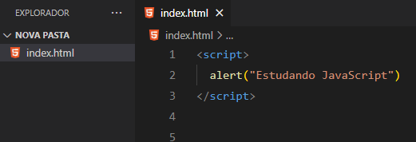
Ao abrir o arquivo usando o navegador teremos a seguinte situação:
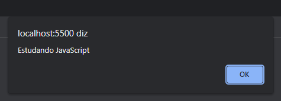
A outra forma é "linkando" o arquivo javascript no final do body do HTML:
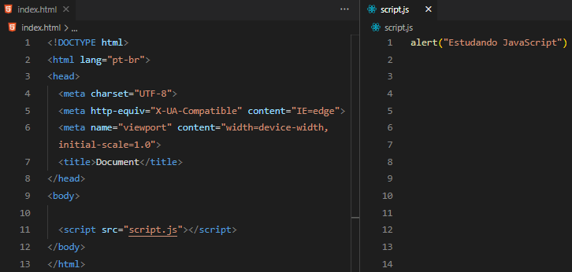
Ao abrir o arquivo através do navegador teremos a seguinte situação:
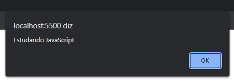
Saída de dados no Terminal do VS Code usando o comando console.log( )
Para rodarmos javascript no terminal do vs code, primeiramente devemos instalar um programa chamado "Node".
Para instalar acesse o site: https://nodejs.org/en/download/
Deixaremos aqui dois vídeos ensinando como instalar e configurar o node:
https://www.youtube.com/watch?v=-cLzUD0TQY0
https://www.youtube.com/watch?v=65gksI59EIY&ab_channel=ProgramadorViking
Com o node já instalado, podemos abrir o Terminal do VS Code com o comando Ctrl + ' (Control mais Aspas Simples) ou ir no menu superior clicar em "Ver" e logo depois clicar em "Terminal".
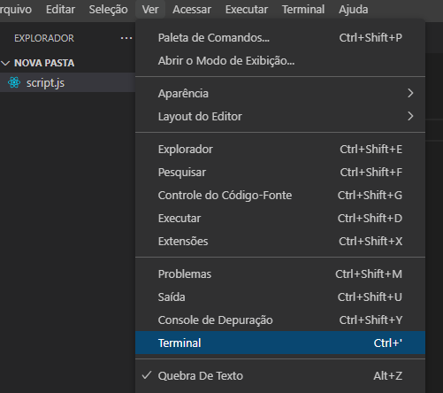
Teremos a seguinte situação:
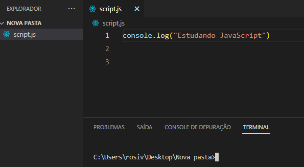
Para executarmos o arquivo script.js, digitaremos no terminal o comando "node nome_do_arquivo.js" e apertamos o Enter.
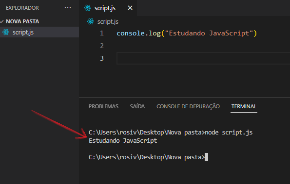
Agora estamos prontos para iniciar os estudos de Arrays.
Arrays
Vetores ou Arrays são estruturas que permitem armazenar uma lista de dados na memória principal do computador.
Representação visual do array de nome produtos.
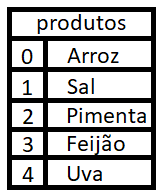
O índice numérico (que começa em 0) identifica cada elemento da lista.
Para referenciar um item/elemento do vetor, devemos indicar seu nome, seguido por um número (índice) entre colchetes.
produtos[0] ➜ retorna o elemento Arroz.
Podemos alterar o elemento/item da lista fazendo uma nova atribuição a um elemento do vetor:
produtos[2] = "Leite" ➜ significa que no índice 2 onde era Pimenta, agora será Leite.
IMPORTANTE: Na linguagem JavaScript, não é necessário indicar o número total de elementos do vetor na sua declaração.
Para declarar um vetor, devemos utilizar uma das seguintes formas:
var produtos = [ ]
var produtos = new Array( )
Também é possível declarar um vetor com algum conteúdo inicial:
var produtos = ["Arroz", "Feijão", "Iogurte"]
Diferença entre as variáveis e os vetores
A variável armazena apenas um valor por vez, quando uma nova atribuição a essa variável é realizada, o seu valor anterior é perdido.
O vetor/array permite armazenar um conjunto de dados e acessar todos os seus elementos através do índice.
Inclusão e Exclusão de elementos/itens do array.
push( ) ➜ adiciona um elemento ao final do vetor
unshift( ) ➜ adiciona um elemento ao inicio do vetor e desloca os elementos
pop( ) ➜ remove o último elemento do vetor
shift( ) ➜ remove o primeiro elemento do vetor e desloca os elementos
Exemplo:
var cidades = ["Pelotas"] ➜ declaração do array cidades com um elemento Pelotas
cidades[0] ➜ retorna o elemento Pelotas
cidades.push("São Lourenço") ➜ adiciona o elemento São Lourenço ao final do array
cidades[0] ➜ retorna o elemento Pelotas
cidades[1] ➜ retorna o elemento São Lourenço
cidades.unshift("Porto Alegre") ➜ adiciona o elemento Porto Alegre ao início do array
cidades[0] ➜ retorna o elemento Porto Alegre
cidades[1] ➜ retorna o elemento Pelotas
cidades[2] ➜ retorna o elemento São Lourenço
var retirada = cidades.pop( ) ➜ remove o último elemento do vetor e o armazena na variável retirada
cidades[0] ➜ retorna o elemento Porto Alegre
cidades[1] ➜ retorna o elemento Pelotas
retirada = cidades.shift( ) ➜ remove o primeiro elemento do array e o armazena na variável retirada
cidades[0] ➜ retorna o elemento Pelotas
IMPORTANTE: As operações de exclusão de elementos são atribuídas à variável retirada. Essa variável recebe o elemento removido do array.
Tamanho do vetor
Na manipulação de vetores temos uma propriedade muito importante chamada length. Essa propriedade retorna o número de elementos do vetor (tamanho do vetor). Ela é usada quando queremos percorrer a lista, realizar exclusões ou exibir o número total de elementos/itens do vetor. Para percorrer e exibir o número de elementos de um vetor, podemos utilzar o comando for.
Exemplo:
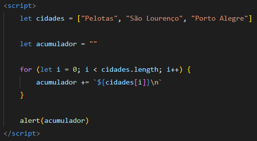
No comando for temos a variável de controle (i) iniciando com 0. Na condição temos i menor que cidades.length. O tamanho do vetor é igual a 3, pois tem 3 elementos/itens. Então na primeira passagem pela condição, temos 0 < 3. Com a condição resultando em true, a variável acumulador irá armazenar o primeiro elemento do vetor, pois em cidade[0] temos o elemento "Pelotas". Em seguida o i é incrementado e passa de 0 para 1, e novamente entra na parte da condição. Segue esse loop até a condição resultar em false.
Em seguida temos saída através do método alert().
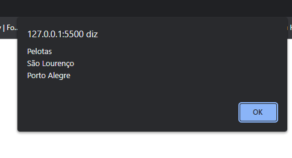
toString( ) e join( )
Outra forma de exibir o conteúdo do vetor é pelo uso dos métodos toString( ) e join( ). Eles convertem o conteúdo do vetor em uma string.
No método toString( ) uma vírgula é inserida entre os elementos.
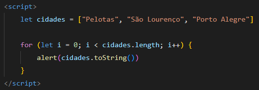
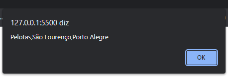
No método join( ) podemos indicar qual caractere vai separar os itens. Referenciar o nome do vetor seguido pelo método join( ) sem o caractere de separação gera uma saída idêntica à toString( ).
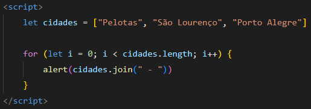
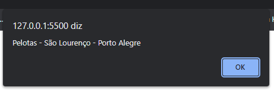
Localizar Conteúdo
Como alguns vetores são grandes, temos alguns métodos que nos auxiliam no controle de seu conteúdo. Iremos ver dois métodos que verificam a existência ou não de um conteúdo do vetor.
No indexOf( ), a busca ocorre a partir do início do vetor. Já no lastIndexOf( ) a busca é do final até o seu início. Caso o conteúdo exista no vetor, o número do índice é retornado. Caso o conteúdo pesquisado não exista no vetor, o valor -1 é devolvido pelo método.
Exemplo:
var idades = [10, 17, 14, 19, 10, 11]
alert(idades.indexOf(17)) ➜ retorna 1
alert(idades.lastIndexOf(10)) ➜ retorna 4 (o índice do último 10)
alert(idades.indexOf(9)) ➜ retorna -1
Vetores de Objetos
Um objeto é uma coleção de dados e funcionalidades (que geralmente consistem em diversas variáveis e funções). Tais dados e funcionalidades também são chamadas de propriedades e métodos quando estão dentro de objetos.
Exemplo de um objeto:
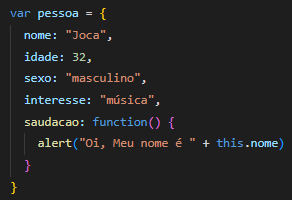
Como usar um objeto ?
Caso você precise usar algum atributo/propriedade do objeto, basta digitar o nome do objeto seguido de ponto (.) e o nome do atributo ou do método.
Ex: pessoa.nome retornará a string "Joca".
Um vetor pode conter uma lista de nomes ou números. Também é possível definir um vetor que contenha uma lista de objetos com alguns atributos. Um vetor de objetos é declarado da mesma forma que um vetor simples. Na inserção de itens no vetor devem-se indicar os atributos que o compõem.
Exemplo de um vetor de objeto:
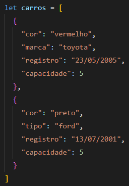
Definir um vetor/array de objetos nos permite realizar operações sobre esse vetor.
Exemplo:
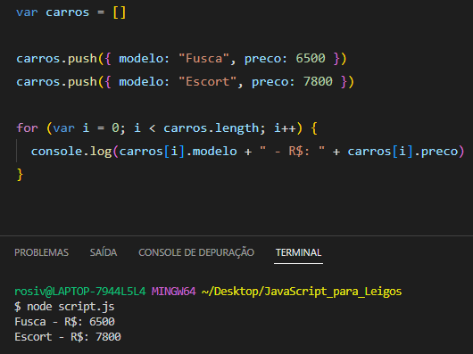
No exemplo acimo o vetor é declarado, logo em seguida é inserido dois veículos através do comando push. Note que os objetos sempre ficam dentro de chaves { }. O comando for foi usado para percorrer os elementos do vetor e através do comando console.log foi apresentado o conteúdo.
Pesquisar e Filtrar Dados
Após possuírmos um conjunto de dados em uma lista, podemos realizar algumas operações sobre as listas, como a pesquisa ou o filtro de dados.
Exemplo de filtro de dados: obtenção do nome e da nota dos alunos aprovados.
Nos programas que realizam essas operações um cuidado especial é necessário: o de informar quando a pesquisa não encontrou os dados. Imagine que você está em um site de clips/músicas e existe um campo para pesquisar pelo título da música. Você digita uma palavra-chave e fica aguardando a lista das músicas/clips. Caso o site não localize, é necessário retornar essa informação.
Observe o código a seguir:
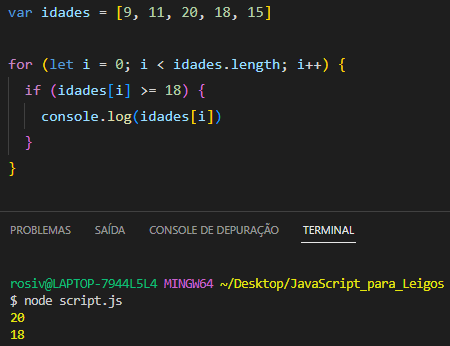
Como fazer esse script apresentar uma mensagem indicando que não há idades maiores que 18 na lista ?
A solução para esse cenário é utilizar uma variável de controle (flag ou sinalizador). Essa variável recebe um valor antes do for, caso a condição do if seja verdadeira, a flag muda de valor. Após o for, é verificado se a flag mantém o valor inicial.
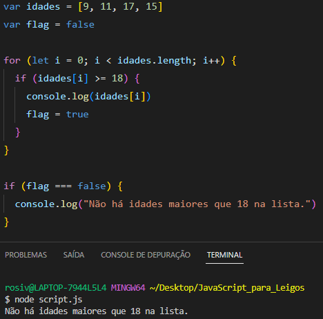
IMPORTANTE: Também poderíamos atribuir 0 (false) e 1 (true) para a variável flag.
Classificar os Itens do Vetor
Javascript dispõe do método sort( ) para classificar os itens de um vetor em ordem alfabética crescente. O método reverse( ) inverte a ordem dos elementos de um Array.
IMPORTANTE: O reverse( ) não ordena de forma alfabética decrescente, ele inverte a ordem dos elementos de um Array, colocando o último elemento em primeiro, o penúltimo em segundo e assim sucessivamente.
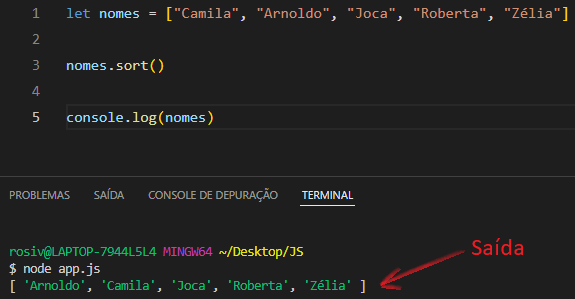
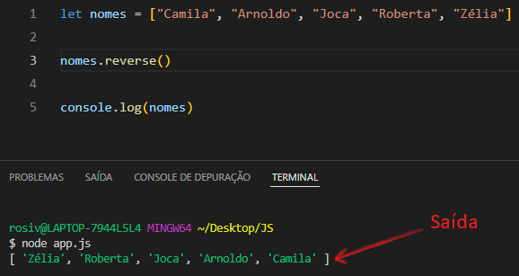
Caso seja necessário manter a lista na ordem original, é possível criar uma cópia da lista/vetor original através do método slice( ). Sem parâmetros, o slice( ) obtém uma cópia com todos os elementos do vetor original.

Um detalhe importante sobre as ordenações de listas é que os dados dos vetores/arrays são classificados como strings, mesmo que seu conteúdo seja formado por números. Quando são números, a comparação é realizada da esquerda pra direita, caractere por caractere. Primeiramente é comparado o primeiro caractere, depois o segundo e assim por diante.
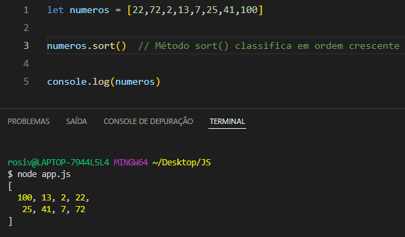
Para os números serem organizados em ordem crescente deve-se passar uma função (callback) como parâmetro em sort( ).
Essa função compara cada elemento do vetor. Os dois parâmetro a e b são substituidos por dois elementos de dentro do vetor e são comparados. É realizado três comparações, se a é maior que b, se a é menor que b ou se a é igual a b. O resultado do método sort( ) com a função(como parâmentro) é um Array ordenado em ordem crescente.
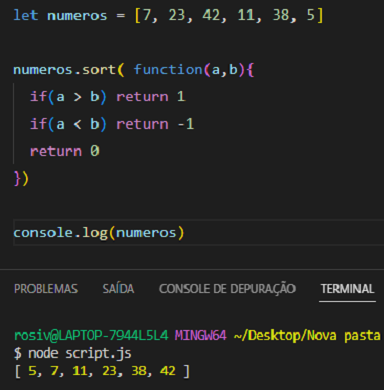
Método every( )
O método every( ) testa se todos os elementos do array passam pelo teste implementado pela função fornecida.
A partir do ES5, o tipo Array do JavaScript fornece um método chamado every( ) que testa todos os elementos do array.
O exemplo a seguir usa o every() para verificar se cada elemento do array numbers é maior que zero:
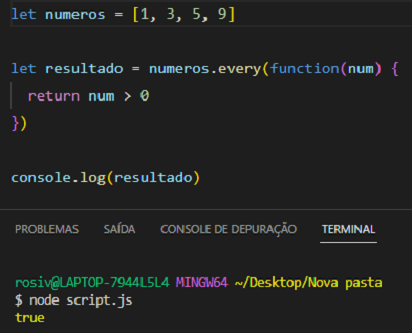
O exemplo a seguir testa se todos os elementos do array são números pares.
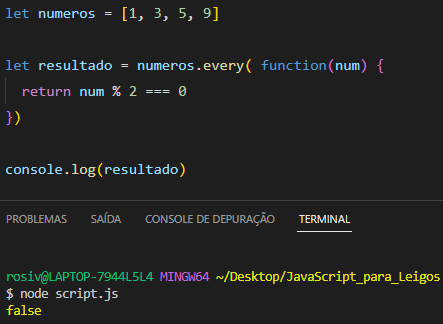
Por outro lado, o exemplo a seguir testa se todos os elementos do array são números ímpares.
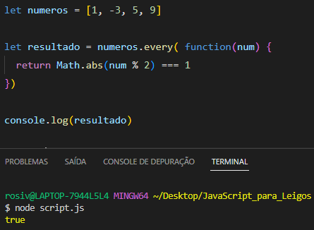
No exemplo abaixo, o metodo every() verifica se cada item dentro do vetor numeros1 é igual a cada item dentro do vetor numeros2.
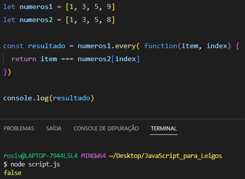
Exercícios
a ) Faça um programa que leia um vetor de 5 números inteiros e mostre-os.
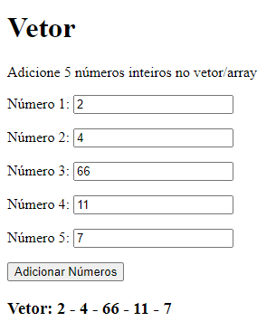
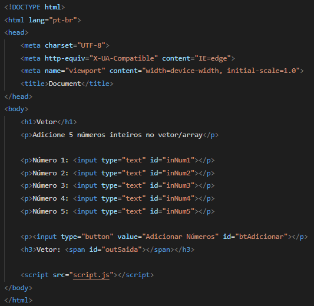
Primeiramente temos o vetor numeros, onde serão inseridos os números digitados. Em seguida temos todas as referências que farão a ligação com os elementos Html através dos id's. O querySelector é parecido com o getElementById, porém no querySelector devemos informar se o que pegaremos (dentro do HTML) será um id ou uma class. Se for um id usamos o hash ( # ) e se for uma class usamos o ponto ( . ).
Em seguida temos a função adicionarNumeros. No início da função, capturamos através do comando value os valores que foram digitados dentro dos input's no Html e os convertemos em números com o comando Number. Cada valor é inserido em uma variável.
Todos os valores são inseridos dentro do vetor numeros através do comando push. O push tem a função de inserir um elemento no final do vetor. Quando são inseridos diversos valores de uma só vez, a ordem fica da forma em que foram colocados no push.
Dentro do Html temos um h3 que tem uma tag span com o id="outSaida". Na tag span é onde ficará localizado o conteúdo com os elementos do array. Esse conteúdo é inserido através do comando innerHTML. O método join() tem a função de exibir o conteúdo do vetor. No método join() podemos indicar qual caractere vai separar os itens.
O botão Adicionar que se encontra dentro do Html possui um id="btAdicionar". O método addEventListener() executa uma função de acordo com algum evento. Nesse caso ele irá executar a função adicionarNumeros caso o evento de click ocorra no botão Adicionar.
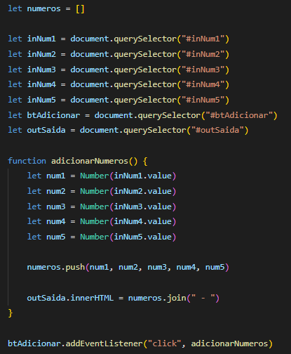
b ) Faça um programa que leia um vetor de 5 números reais e mostre-os na ordem inversa.
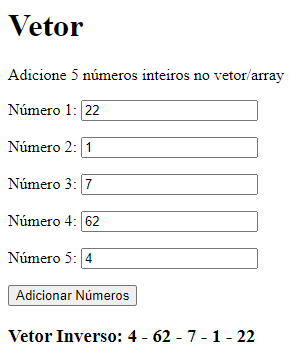
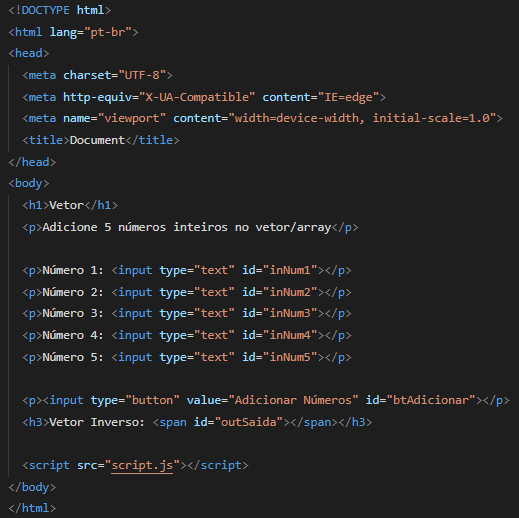
Primeiramente temos o vetor numeros, onde serão inseridos os números digitados. Em seguida temos todas as referências que farão a ligação com os elementos Html através dos id's. O querySelector é parecido com o getElementById, porém no querySelector devemos informar se o que pegaremos (dentro do HTML) será um id ou uma class. Se for um id usamos o hash ( # ) e se for uma class usamos o ponto ( . ).
Em seguida temos a função adicionarNumero. No início da função, capturamos através do comando value os valores que foram digitados dentro dos input's no Html e os convertemos em números com o comando Number. Cada valor é inserido em uma variável.
Todos os valores são inseridos dentro do vetor numeros através do comando push. O push tem a função de inserir um elemento no final do vetor. Quando são inseridos diversos valores de uma só vez, a ordem fica da forma em que foram colocados no push.
Em seguida temos o método reverse() que irá inverter a ordem dos elementos do array. O último elemento será o primeiro, o penúltimo será o segundo e assim sucessivamente.
Dentro do Html temos um h3 que tem uma tag span com o id="outSaida". Na tag span é onde ficará localizado o conteúdo com os elementos do array. Esse conteúdo é inserido através do comando innerHTML. O método join() tem a função de exibir o conteúdo do vetor. No método join() podemos indicar qual caractere vai separar os itens.
O botão Adicionar que se encontra dentro do Html possui um id="btAdicionar". O método addEventListener() executa uma função de acordo com algum evento. Nesse caso ele irá executar a função adicionarNumero caso o evento de click ocorra no botão Adicionar.
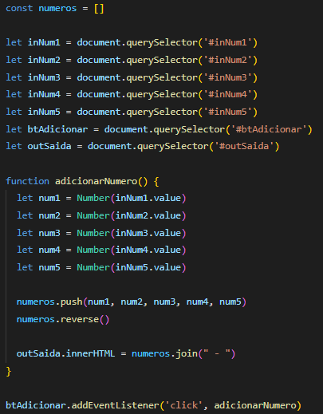
c ) Faça um programa que leia 4 notas, mostre as notas e a média na tela.
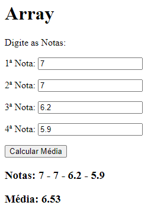
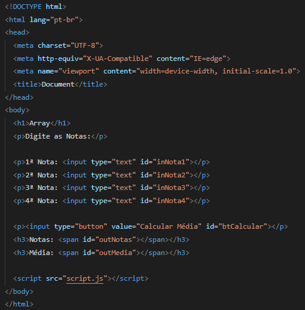
Primeiramente temos o vetor notas, onde serão inseridos os números digitados. Em seguida temos todas as referências que farão a ligação com os elementos Html através dos id's. O querySelector é parecido com o getElementById, porém no querySelector devemos informar se o que pegaremos (dentro do HTML) será um id ou uma class. Se for um id usamos o hash ( # ) e se for uma class usamos o ponto ( . ).
Em seguida temos a função calcularMedia. No início da função, capturamos através do comando value os valores que foram digitados dentro dos input's no Html e os convertemos em números com o comando Number. Cada valor é inserido em uma variável.
Todos os valores são inseridos dentro do vetor notas através do comando push. O push tem a função de inserir um elemento no final do vetor. Quando são inseridos diversos valores de uma só vez, a ordem fica da forma em que foram colocados no push.
Em seguida temos a criação da variável soma, que será uma variável acumuladora.
Depois temos uma estrutura de repetição for, com o objetivo de percorrer o vetor. A variável acumuladora soma recebe em cada volta do loop o elemento de cada índice do vetor e os soma. No final temos as 4 notas somadas e armazenadas na variável soma.
Após o for, temos o cálculo da média. Soma dividido por 4. O resultado do cálculo é armazenado na variável soma.
Dentro do elemento Html que recebeu o id="outNotas" serão exibidas (através do innerHTML) todas as notas do vetor com a ajuda com método join(). O mesmo acontecerá com o elemento Html que possui o id="outMedia", nesse caso ele exibirá a média seguida de duas casas decimais.
O botão Calcular Media que se encontra dentro do Html possui um id="btCalcular". O método addEventListener() executa uma função de acordo com algum evento. Nesse caso ele irá executar a função calcularMedia caso o evento de click ocorra no botão Calcular Media.
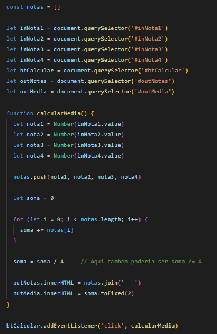
d ) Faça um programa que leia 5 números inteiros e armazene-os num vetor. Armazene os números pares no vetor PAR e os números IMPARES no vetor impar. Imprima os três vetores.
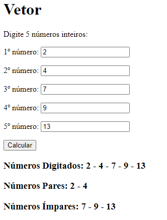
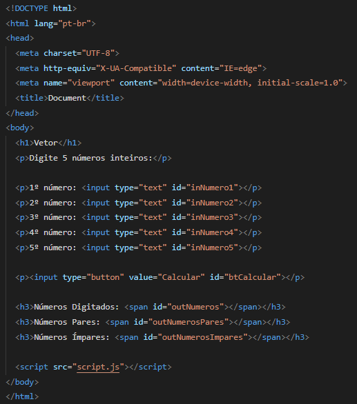
Primeiramente temos a criação de 3 arrays, numeros, pares e impares. Em seguida temos as referências aos elementos Html com o uso do querySelector. Logo após temos a função calcularNumeros. No início da função, os valores digitados dentro dos input's são capturados através do comando value e convertidos em números com o uso do comando Number, em seguida são armazenados em variáveis.
Através do método push, armazenamos as variáveis no array numeros. A estrutura de repetição for irá percorrer todos os elementos do array numeros. Dentro do loop, temos um if else, se o elemento do array for par, ele será inserido no vetor pares, se o elemento do array for ímpar, ele será inserido no vetor impares.
Dentro do elemento Html que possui o id="outNumeros", será exibido todos os elementos do array numeros, o mesmo acontecerá com os outros elementos Html, um exibirá o array pares, o outro exibirá o array impares.
O botão Calcular que se encontra dentro do Html possui um id="btCalcular". O método addEventListener() executa uma função de acordo com algum evento. Nesse caso ele irá executar a função calcularNumeros caso o evento de click ocorra no botão Calcular.
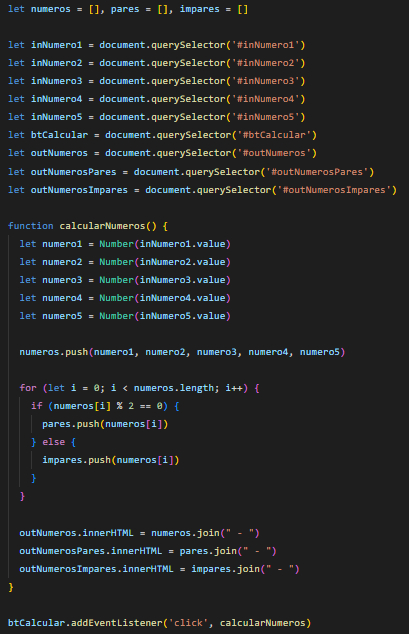
e ) Faça um programa que peça o nome do aluno e suas 3 notas. Calcule e armazene num vetor a média de cada aluno. Em seguida, imprima o nome, a média (maior ou igual a 7) e se foi "Aprovado" ou "Reprovado".
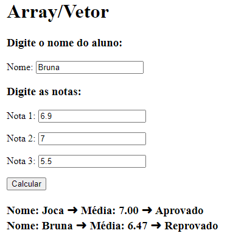
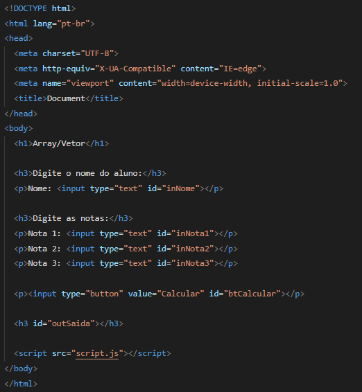
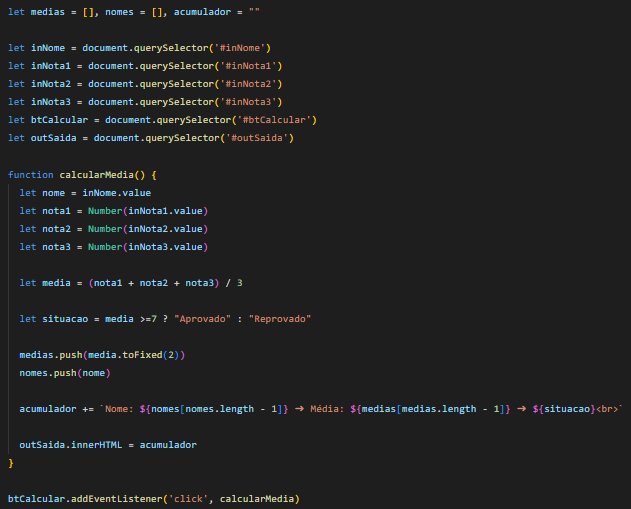
f ) Faça um programa que leia um vetor de 5 números inteiros, mostre a soma, a multiplicação e os números.
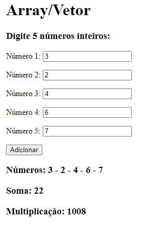
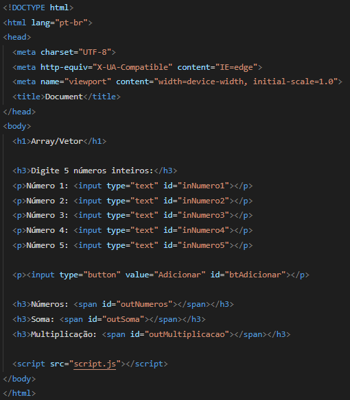
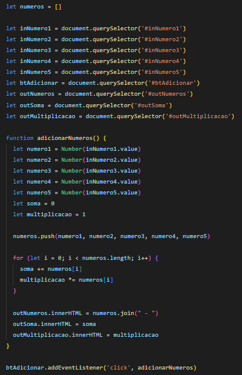
g ) Faça um programa que insira números no vetor, calcule e mostre a soma dos quadrados dos elementos do vetor.
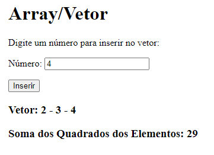
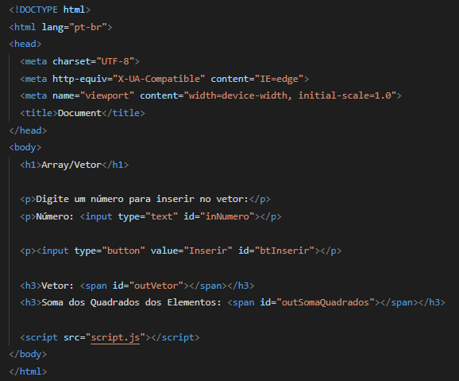
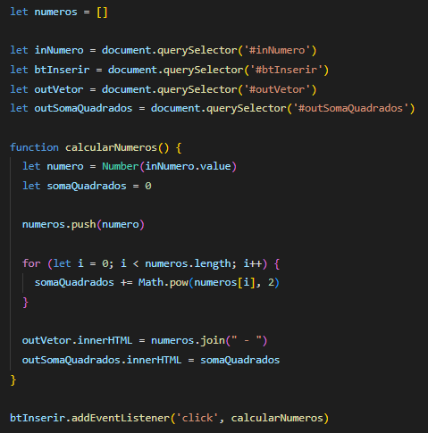
h ) Escreva um programa de atendimento para uma clínica odontológica. Ao adicionar um paciente, o mesmo irá para o final do vetor e será mostrado na lista. Ao adicionar um paciente como urgência, o mesmo irá para o início do vetor e será o primeiro da lista. Ao clicar no botão atender, o primeiro paciente será inserido no campo "Em Atendimento" e será retirado da lista.
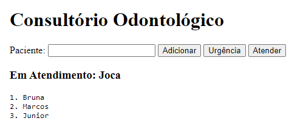
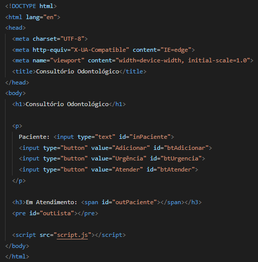
i ) Escreva um programa que leia o modelo e o preço de um carro, e armazene em um vetor. O programa deverá filtrar a lista de carros por preço, onde o cliente informará o valor máximo que possui.
j ) Escreva um programa que ao inserir números no vetor, informe se os mesmos estão em ordem crescente ou não. O programa deverá impedir a inserção de números repetidos.
l ) Escreva um programa que leia um candidato, sua quantidade de acertos e os insira em um vetor. Ao clicar no botão Aprovados 2ª Etapa, o programa deverá receber a quantidade de acertos necessários para a aprovação dos candidatos.